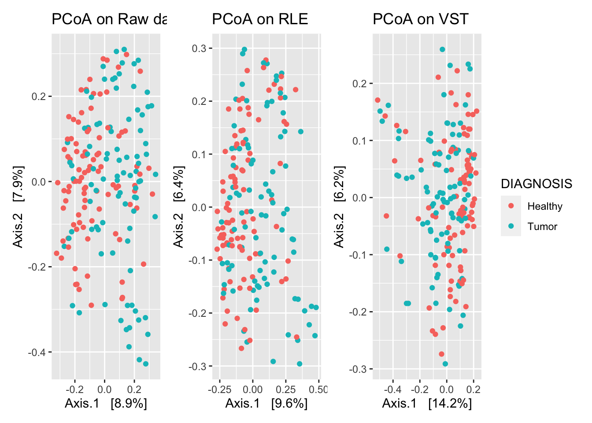

Chapter 6 TMM (edgeR)
TMM (Trimmed median of m-values) is another method borrowed from RNA-Seq analysis, and implemented in edgeR (Robinson and Oshlack 2010). This method uses, or calculates a reference sample, and compares all other samples to the reference sample. The size factor is the mean of the log-ratios after excluding the highest count taxa and taxa with the largest fold change. As taxa with zero counts are excluded, a pseudo count is needed. Additionally, there is the TMMwsp option which is encouraged as it is more robust to zero counts. Positive counts are reused to increase the number of features when we compared. The singleton positive counts are paired up in decreasing order of size and then a modified TMM method is applied to the re-ordered libraries.
6.1 EdgeR TMM implementation
norm_TMM <- function(physeq, group = 1, method="TMM", pseudocount = 1, ...){
require("edgeR", quietly = T)
require("phyloseq", quietly = T)
# Enforce orientation.
if( !taxa_are_rows(physeq) ){ physeq <- t(physeq) }
x = as(otu_table(physeq), "matrix")
# Add one to protect against overflow, log(0) issues.
x = x + pseudocount
# Check `group` argument
if( identical(all.equal(length(group), 1), TRUE) & nsamples(physeq) > 1 ){
# Assume that group was a sample variable name (must be categorical)
group = get_variable(physeq, group)
}
# Define gene annotations (`genes`) as tax_table
taxonomy = tax_table(physeq, errorIfNULL=FALSE)
if( !is.null(taxonomy) ){
taxonomy = data.frame(as(taxonomy, "matrix"))
}
# Now turn into a DGEList
y = DGEList(counts=x, group=group, genes=taxonomy, remove.zeros = TRUE)
# Calculate the normalization factors
d = edgeR::calcNormFactors(y, method=method)
# Check for division by zero inside `calcNormFactors`
if( !all(is.finite(d$samples$norm.factors)) ){
stop("Something wrong with edgeR::calcNormFactors on this data,
non-finite $norm.factors, consider changing `method` argument")
}
scalingFactor <- d$samples$norm.factors * d$samples$lib.size / 1e6
dataNormalized <- t(t(otu_table(physeq)) / scalingFactor)
#dataNormalized <- cpm(d)
otu <- otu_table(dataNormalized, taxa_are_rows = T)
sam <- access(physeq, "sam_data")
sam$scaling_factor <- scalingFactor
tax <- access(physeq, "tax_table")
phy <- access(physeq, "phy_tree")
ps_edgeR <- phyloseq(otu,sam,tax,phy)
return(ps_edgeR)
}6.2 TMM on Global Patterns
Perform normalization:
View PCoA plots
plot_ordination(gp_tmm, phyloseq::ordinate(gp_tmm, "PCoA", "bray") , color = "SampleType", title = "PCoA on Raw data")
View how TMM normalization changes distance metrics differently than raw counts.
plot_norm_changes(gp_tmm, gp_raw,
x_lab = "Raw", y_lab = "TMM",
title = "Distance metric comparision between TMM normalization and Raw counts ")
References
Robinson, Mark D., and Alicia Oshlack. 2010. “A Scaling Normalization Method for Differential Expression Analysis of Rna-Seq Data.” Genome Biology 11 (3): R25. https://doi.org/10.1186/gb-2010-11-3-r25.